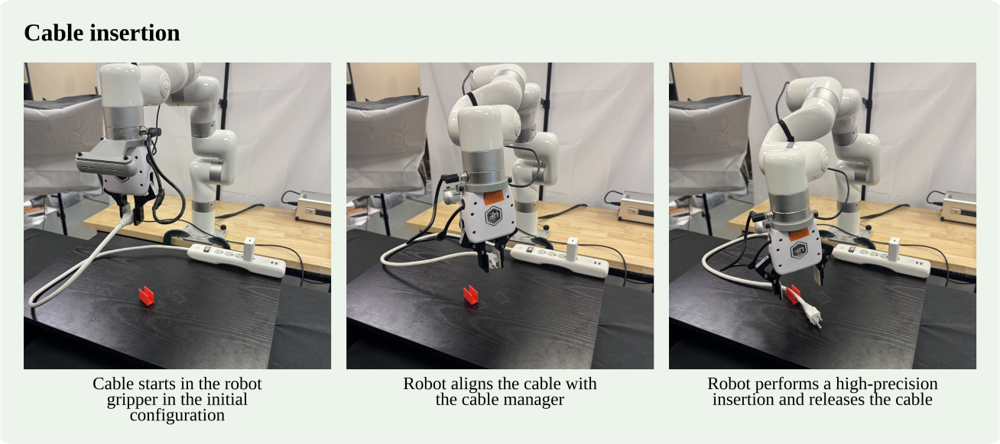

A2F on a frozen VLA. The instruction’s text-to-vision attention over the current image selects
the evidence (red cells), which is masked to form the counterfactual observation. At every integration step the
same policy predicts the action flow twice, from the full observation (v+) and from the masked
one (v−); the contrast between the two is added to v+, and the guided flow
is integrated into the executed action chunk. No weights are changed and no second model is used.
A central challenge in generalist robot control is vision-action grounding: making sure that the
generated actions stay grounded in the scene the robot actually encounters. Despite learning from large-scale
demonstrations, generalist policies often fail to condition their actions on the current observation. This shows up as
poor generalization to unseen tasks and scenes, imprecise control in fine-grained manipulation, and a reliance on
learned behavioral priors over changes in object positions, so the robot executes a memorized trajectory. At inference
time the robot has no task-specific reward or target pose that could correct it.
Modern VLAs couple a pretrained vision-language model (VLM) with a flow-matching action expert through attention. The
VLM already locates the task-relevant regions, but the action expert learns its own attention over the VLM
representations and need not preserve that grounding. A2F closes this gap at test time: it reads the
policy’s own text-to-vision attention to find the evidence for the instruction, withholds that evidence in a
counterfactual observation, and uses the difference between the two action-flow predictions as a correction
in the policy’s native action space. The frozen policy itself translates the visual intervention into action
coordinates, with no explicit 3D target and no separately trained corrective model.
Attention in VLAs is sub-goal specific. The attended visual regions change with the active sub-goal during task execution, and the instruction words locate the evidence long before the action expert reads it.
Limited training data leaves a residual error that appears across scales: at a larger scale it limits generalization, at a smaller scale it degrades high-precision tasks.
A2F uses that attention to refine action generation across different VLA models (π0.5, Cosmos3, StarVLA), substantially improving their real-world robotic performance.
A controlled study explains why the paired contrast removes the residual error, with an oracle showing a 95% reduction in velocity error at early flow times.
Method
We consider Mixture-of-Transformers-style VLA policies such as π0.5, Cosmos3 and StarVLA: a
vision-language tower initialised from a pretrained VLM, and an action expert vθ that generates
an action chunk by flow matching while attending to the vision-language tower. At inference the chunk is obtained from
Gaussian noise with K Euler steps, each adding Δτ·vθ. A2F changes only the
velocity that is integrated.
🔁 Guided action flow
Let M be the attention score matrix over the visual tokens and ρ the erasure budget. The intervention zeroes
the input embeddings of the top-ρ fraction of visual tokens ranked by M, which withholds the selected
evidence from the images while the instruction and the robot state are kept. The policy is evaluated twice at the same
noisy action chunk and flow time, from the full observation (v+) and from the evidence-withheld one
(v−). We guide with the projection residual, the component of v+
orthogonal to v−, scaled by one guidance strength per action coordinate: translation and rotation
are guided, the gripper and padded coordinates follow v+. Guidance costs one additional velocity
evaluation per guided step; the first step is left unguided because the contrast diverges as τ → 0.
Algorithm 1 One step of A2F
Require: frozen action expert v_θ; observation o = (I, L, q); layer ℓ*; erasure budget ρ;
Euler steps K; executed actions H_e; strengths ω_tr, ω_rot; stabilizer ε
1: M ← attention score matrix of (I, L) at layer ℓ* ▷ text→vision attention, sinks removed
2: I₋ ← E_ρ(I; M) ▷ evidence withheld
3: ω ← ω_tr·1[translation] + ω_rot·1[rotation] ▷ zero on gripper, padding
4: A⁰ ~ N(0, I); Δτ ← 1/K; τ_k ← k/K
5: for k = 1 … K:
6: v₊ ← v_θ(A^{τ_{k-1}}, τ_{k-1}, o)
7: if k = 1: v ← v₊ ▷ first step unguided
8: else:
9: v₋ ← v_θ(A^{τ_{k-1}}, τ_{k-1}, (I₋, L, q))
10: s ← ⟨v₊, v₋⟩ / (‖v₋‖² + ε) ▷ over all coordinates
11: v⊥ ← v₊ − s·v₋ ▷ projection residual
12: v ← v₊ + (1_H ωᵀ) ⊙ v⊥
13: A^{τ_k} ← A^{τ_{k-1}} + Δτ·v
14: execute A¹[1:H_e], then replan
The update has the algebraic form of classifier-free guidance, but the mechanism differs: CFG needs a model trained
with condition dropout and strengthens the condition against an unconditional reference. A2F needs no such training.
v− is a deliberately degraded prediction of the same frozen policy, obtained by withholding only the
selected visual evidence, and the update steers the flow away from it. By Tweedie’s formula the raw contrast
v+ − v− is the score of the likelihood ratio between the full and the
evidence-withheld images: the direction in action space along which the selected evidence, and nothing else in the
observation, changes the policy’s action distribution.
👁️ Attention extraction and sink removal
Attention selects the task-relevant objects. Columns: the initial observation, the attention score
matrix M on the same frame, and the final state; rows: exterior and wrist cameras. For “stack yellow cube
on red”, the matrix concentrates on the cubes in both views, and its top-ranked tokens are the ones A2F zeroes in
the counterfactual branch.
At each replanning step we read the text-to-vision attention of the vision-language tower at a fixed layer
(π0.5 layer 12), averaged over all heads and instruction tokens, and filter it. The mean scores are not yet a
usable ranking: a few visual tokens receive a large share of the attention regardless of the scene, a behavior known as
attention sinks. Ranking by raw attention would select these sinks instead of the evidence. The filter removes
them in three steps and renormalizes so that the total attention is preserved:
Content-independent sinks sit at the same grid positions across tasks and layers; we identify these positions once per camera on a small calibration set and discard their attention.
Input-dependent sinks are detected by spatial isolation: a sink is a single bright token among dark neighbors, whereas attention on an object rises and falls smoothly over adjacent tokens. Each isolated spike is replaced by the mean of its neighbors, and the step is repeated because suppressing the strongest sink exposes the next.
Light spatial smoothing makes the scores vary at the scale of objects rather than of single tokens.
🌊 The guided flow at a glance
Three predictions during one action-chunk integration. Each row is a scene (two exterior views and
one wrist view); the columns step through the flow, with the progress bar at the top marking the integration time.
Orange is the counterfactual branch v− (evidence withheld), blue the baseline branch
v+, and green the guided prediction A2F executes; the last column shows the spread of the
predicted endpoints as density contours over the image. The counterfactual branch drifts toward where the policy would
act without looking, and the guided prediction moves away from it toward the target.
Why it works: a controlled study of residual correction
A policy can produce a precise action toward a familiar location even after the target moves. We test whether
withholding the evidence of the current goal amplifies this existing scene mismatch, so that the difference between the
full and ablated predictions supplies the missing correction. A small conditional flow model generates a 2-D endpoint
from Gaussian noise; two identical trees of narrow branches define the familiar and the current goal, so changing goal
preference must also respect the endpoint geometry. The network receives a familiar-location cue b, noisy visual
evidence z, and a nuisance input u; at test time b favors the familiar goal while z favors the
current one. The counterfactual sets only z = 0.
Withholding the evidence exposes the familiar-goal preference, and adding the contrast corrects it.
Each panel pools all 6,144 saved endpoints of one sampling condition over three training seeds with matched initial
noise; amber marks endpoints at the familiar (wrong) goal and teal endpoints at the current goal. The baseline (a)
splits between the goals (54.6% at the current goal); the ablated condition (b) collapses onto the familiar goal (9.5%);
the guided field (c) reaches the current goal in 83.0% of endpoints, while geometric validity stays at 87–89% in all
three conditions.
The known mixture of the current goal gives the exact velocity v★, used only for evaluation. At
1,024 shared states early in the flow, the ablated error has nearly twice the component along the baseline error
(least-squares slope 1.92), the cosine between the contrast v+ − v− and
the missing correction v★ − v+ is 0.976, and adding the contrast at
ω = 1 removes 95.1% of the squared velocity error. Together with the endpoint results, this supports the
raw paired contrast as a correction for the scene mismatch. For the VLA, A2F forms the paired prediction by zeroing
attention-selected visual embeddings, and its projection residual is evaluated separately in the appendix.
Simulation results
We evaluate in settings that stress different failure modes of a frozen policy: RoboLab-120 tests
zero-shot task generalization by running policies trained on real data directly in a high-fidelity simulation that the
policy has never seen, and the LIBERO-PRO position-swap suites test out-of-distribution generalization
under a behavior prior induced by training, where a policy that has memorised object locations keeps acting on that
memory after the scene changes.
🧪 RoboLab-120: a 6.2-point gain that grows with task difficulty
Table 1. Success rate (%) on RoboLab-120 under the default instruction: 120 tasks, 10 rollouts each, overall and by the benchmark’s difficulty label (64 simple, 39 moderate, 17 complex tasks). The first four rows are the numbers reported with Cosmos3; π0.5 is our run of the π0.5-DROID checkpoint (27.4 vs. 28.0 reported) and the baseline for A2F. Best per column in bold.
Method
Overall
Simple
Moderate
Complex
π0-FAST
15.5
20.2
13.3
2.9
GR00T N1.6
7.2
8.8
7.9
0.0
DreamZero
25.7
26.1
30.0
14.1
π0.5
27.4
30.5
27.2
16.5
Cosmos3
36.8
40.6
35.4
25.3
π0.5 + A2F (ours)
33.7
35.5
34.4
25.3
Δ vs. π0.5
+6.2
+5.0
+7.2
+8.8
Cosmos3 + A2F (ours)
40.0
44.8
34.4
34.7
A2F uses one fixed configuration on all 120 tasks (ω = 1, the top 15% of text-to-vision attention at
PaliGemma layer 12, CFG-Zero★), with the erased tokens taken from both the exterior and the wrist camera
because about 80% of the instruction’s attention falls on the wrist view on this robot. The configuration was fixed on
14 development tasks and confirmed on 28 disjoint tasks before the full run. Over all 120 tasks it improves 49, worsens
18 and ties 53 (bootstrap over tasks: +3.3 to +9.3 points), and the gain rises from +5.0 points on simple tasks to +8.8
on complex ones, lifting π0.5 from fourth to second among the listed policies.
↔️ LIBERO-PRO position swap: the only test-time method that improves all four suites
Table 2. Success rate (%) on the four LIBERO-PRO position-swap suites with the frozen π0.5, 500 trials per cell at seed 7 with the original prompts; Long is libero_10. Every method is a test-time intervention on the same policy. The last block repeats the comparison on Cosmos3 with A2F applied by embedding zeroing at layer 26. “–” marks cells not run. Best per column in bold.
Method
Key technique
Spatial
Object
Goal
Long
π0.5
50.0
17.8
34.4
5.2
ACG
Temporally coherent actions
50.8
16.4
35.4
5.2
CAG
Language masking
49.2
15.2
26.4
1.0
TAG
Classifier-free guidance
51.0
17.6
36.8
6.0
PCD
SAM masking
51.2
5.0
34.0
7.4
SDN
Noise selection
–
–
–
–
CofactVLA
44.8
18.4
26.8
2.8
A2F (ours)
Counterfactual attention guidance
59.2
24.6
38.2
6.8
Δ vs. π0.5
+9.2
+6.8
+3.8
+1.6
Cosmos3
45.6
9.8
11.4
2.2
Cosmos3 + A2F (ours)
Counterfactual attention guidance
47.0
10.0
10.0
1.0
Δ vs. Cosmos3
+1.4
+0.2
−1.4
−1.2
The position-swap suites exchange object positions in the original LIBERO scenes, so success depends on whether the
action is grounded in the current evidence rather than in the prior. The premise of A2F is that the vision-language
tower locates that evidence even when the action does not follow it (see Analysis), and the
gains above measure how much of the prior the contrast removes: A2F is the only method that improves all four suites,
with the largest gain on three of them.
Real-world results
The real-world tasks test whether the same test-time correction carries over to a physical robot, on tasks that each end
in a fine alignment the policy must servo to. A2F is applied at test time to the same frozen backbone, with
π0.5 and with StarVLA, and compared against the test-time baselines PCD and TAG.
🦾 Tasks
1Cable insertion

Grasp the cable, align it with the cable manager, insert and release. Five in-distribution configurations vary the initial cable and cable-manager poses; two out-of-distribution configurations shift the cable-manager position.
2Adapter relocation
Remove the adapter from one of three source outlets, move it to the target outlet, fine-align and insert. Three source-to-target configurations with 10, 20 and 10 rollouts per method.
3Burette dispensing
Approach the stopcock, open it, and stop at the liquid level marked by the black band. Results for this task are not yet reported.
📊 Success rates
Table 3. Real-world success rate (%) by task and backbone. Each entry pools every evaluated configuration of a task (per method: 100 cable-insertion rollouts with π0.5 and 25 with StarVLA; 40 adapter-relocation rollouts). A2F is applied at test time to the same frozen backbone and raises success on every evaluated task. “–” marks cells not run.
Backbone
Method
Cable insertion
Adapter relocation
π0.5
Base
30.0
20.0
PCD
59.2
33.3
TAG
–
30.0
A2F (ours)
74.7
62.5
StarVLA
Base
24.0
0.0
A2F (ours)
56.0
43.0
On cable insertion with π0.5, A2F improves every configuration and lifts the two out-of-distribution
configurations from 0% to 65% (ω = 1 in-distribution, ω = 3.5 out-of-distribution). On
adapter relocation it improves every source-to-target configuration by 30 to 50 points. Per-configuration rates are in
the paper’s appendix.
🎯 A2F keeps converging where the base policy stalls
Cable-insertion rollouts with π0.5. (a) Euclidean position error and (b) orientation
error (magnitude of the relative rotation vector) of the end effector over time, relative to the mean final pose of
the expert demonstrations; thin lines are individual rollouts and bold lines their means, and the green band spans
the expert demonstrations’ own spread around that pose. During the insertion phase A2F continues to reduce both
errors into the expert band, while π0.5 plateaus above it in position and drifts away in orientation.
(“Counterfactual Evidence Guidance” in the legend is an earlier name for A2F.)
Analysis: the words locate the evidence, the action expert reads it late
Attention mass and pointing accuracy on the task’s objects and destination, by PaliGemma layer,
on 56 π0.5 RoboLab rollouts (28 tasks × baseline/A2F, 9,986 frames, both cameras). The instruction
words hold 0.40–0.45 of their image attention on the evidence across layers 3–11 and point at it in 0.90 of
frames at layer 5, above the positional prior (dotted); the action expert stays at 0.28–0.30 until layers 11–13.
Dashed: uniform attention and chance; vertical: layer 12, the layer A2F reads; bands: 95% intervals over tasks.
Layer 12, which A2F reads, closes the words’ plateau and opens the action expert’s rise, and on the wrist
camera, where most of the instruction’s attention falls, it is the best layer for both streams. The selection is
therefore read from the stream that has found the evidence, at the depth where the action expert begins to use it.
This is why the text-to-vision attention, rather than the action expert’s own attention, supplies the selection.
BibTeX
@article{a2f2026grounding,
title = {Grounding Generalist Policies via Attention-Guided Action Flows},
author = {Anonymous},
journal = {Under review},
year = {2026}
}